E-commerce Website / UI/UX / WordPress / WooCommerce
DONUM
A concept e-commerce experience for a personalized jewelry brand, developed as my final thesis project.
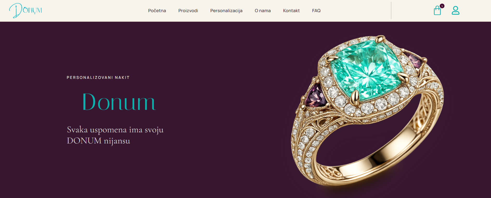
01
Project Overview
A complete academic project spanning visual direction, interface design, content structure and a functional WooCommerce build.
- Type
- Academic / Final Thesis Project
- Role
- Web Designer & Developer
- Focus
- E-commerce, UI/UX, Personalization, Visual Identity
- Tools
- WordPress, WooCommerce, Elementor, HTML, CSS, Photoshop
02
The Concept
DONUM is a personalized jewelry concept that combines modern e-commerce with a refined identity inspired by Serbian heritage, ornamentation and the meaning carried by a thoughtful gift.
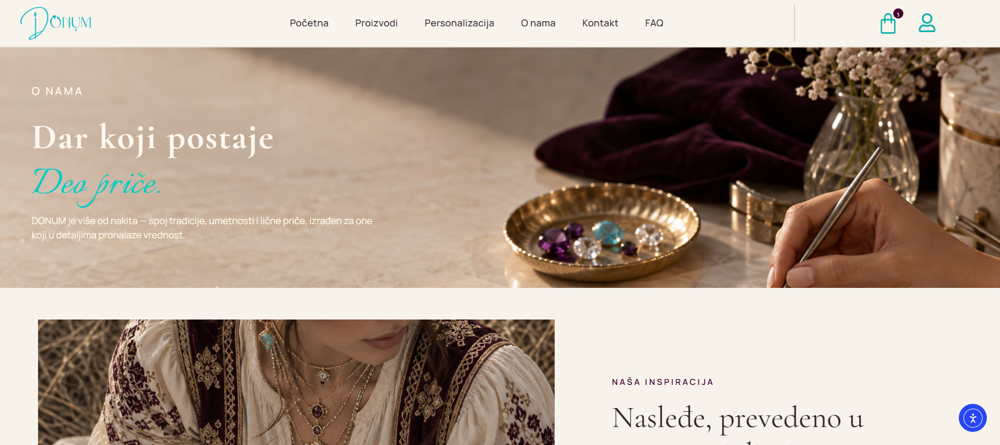
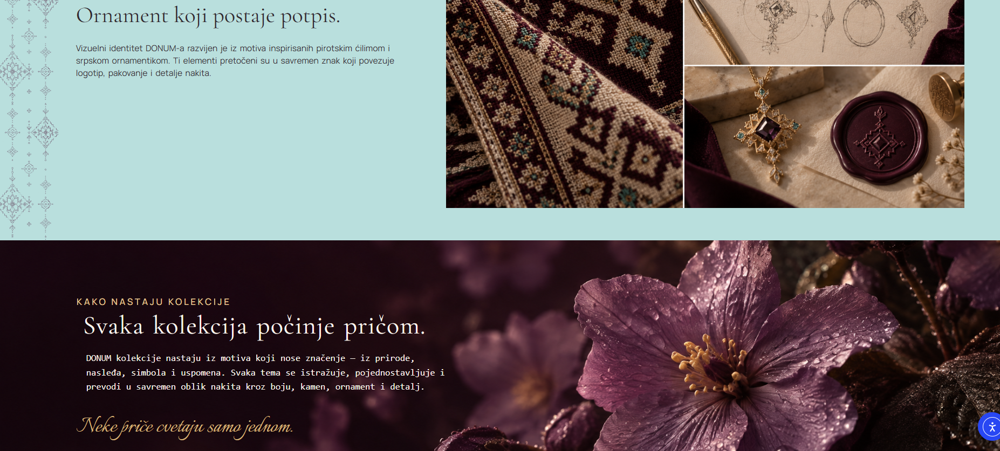
03
Homepage &
Visual Direction
A luxury editorial direction pairs a turquoise and plum palette with generous product imagery, decorative references and a clear hierarchy that guides visitors from story to collection.
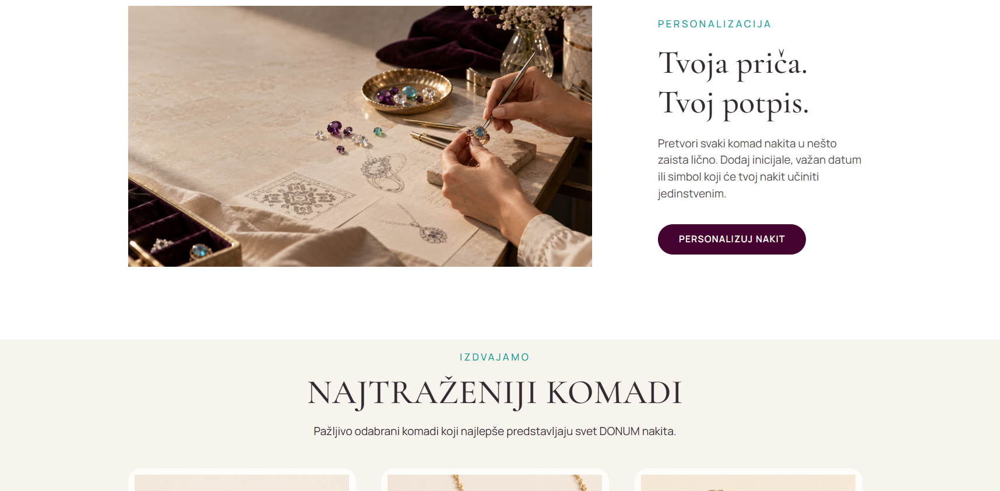
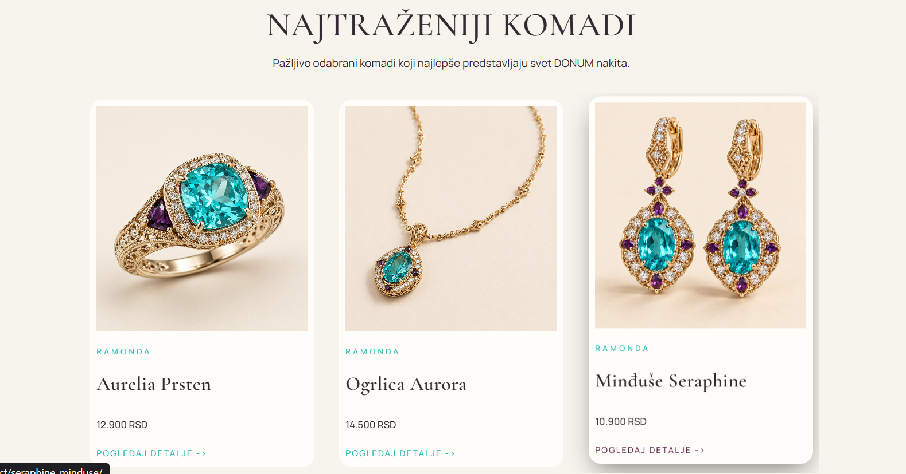
04
Personalization
Experience
The central journey lets users make selected pieces their own through engraving, meaningful symbols and gemstone options, while keeping each decision visually clear.
- 01Choose a piece
- 02Add engraving
- 03Select symbols
- 04Choose a gemstone
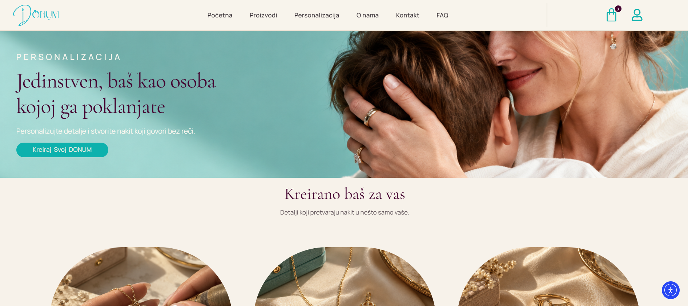
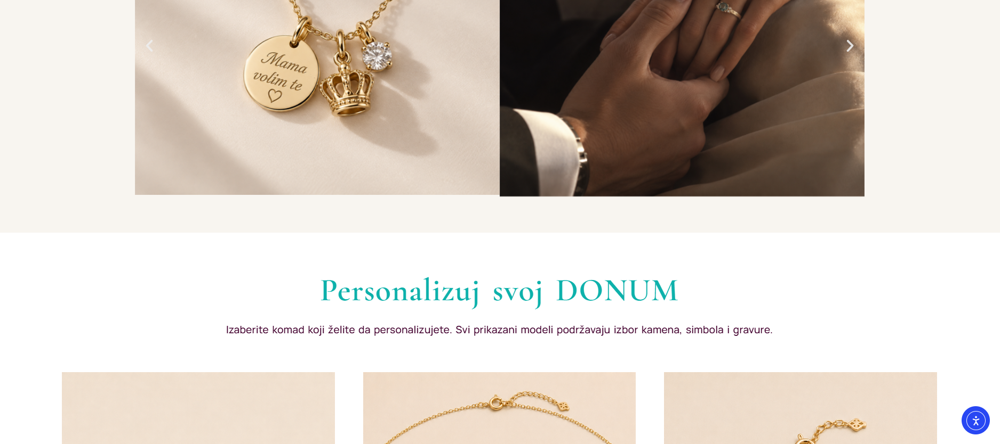
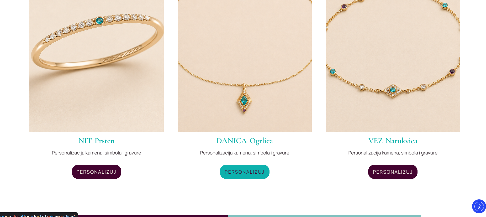
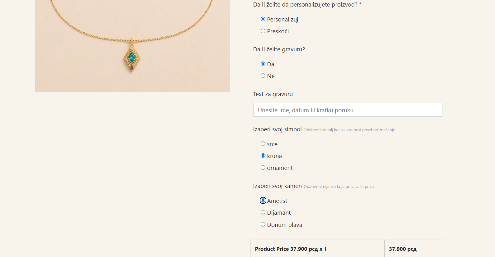
05
E-commerce
Functionality
The WooCommerce experience covers the full test journey—from browsing and filtering to product configuration, coupon use, cart review, checkout and a test payment flow.
- Product browsing
- Filtering
- Product pages
- Personalization options
- Cart
- Coupons
- Checkout
- Test payment flow
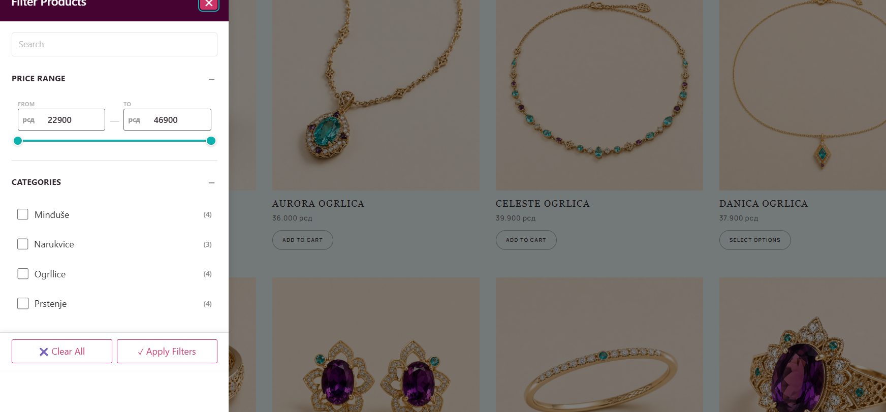
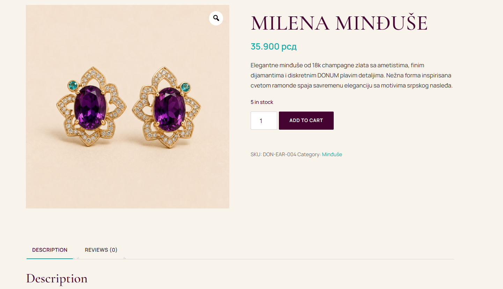
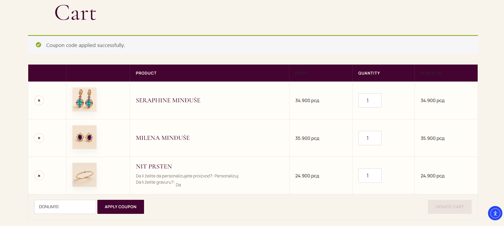
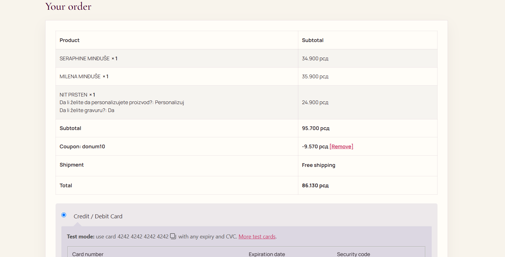
06
Supporting
Experience
Frequently asked questions and a direct contact route complete the journey with clear, accessible customer support.
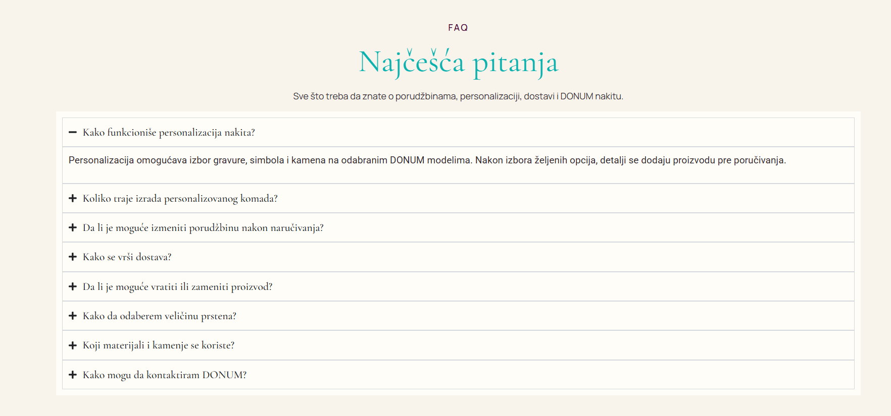
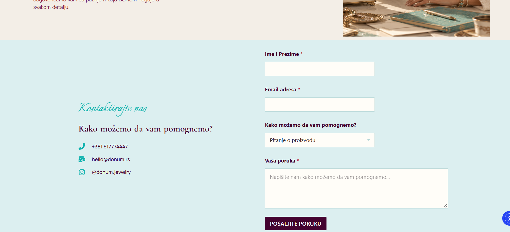
07
Key Takeaways
DONUM brought product thinking, visual design and implementation together within the scope of a final thesis project.
- 01
Built a complete e-commerce flow from discovery through test checkout.
- 02
Combined visual design with functional WooCommerce features.
- 03
Designed a clear, flexible personalization journey.
- 04
Developed the concept and website as part of my final thesis.